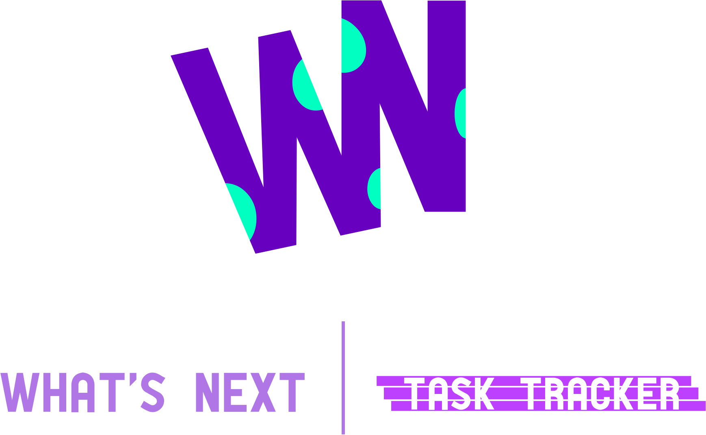

<div class="auth">
    

   

   <firebase-ui


   (uiShown)="this.uiShown = true"

   (signInSuccessWithAuthResult)="signInSuccess($event)"
   ></firebase-ui>
   <app-spinner *ngIf="!this.uiShown"></app-spinner>
</div>

